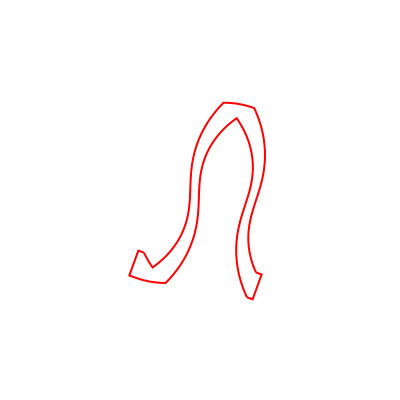
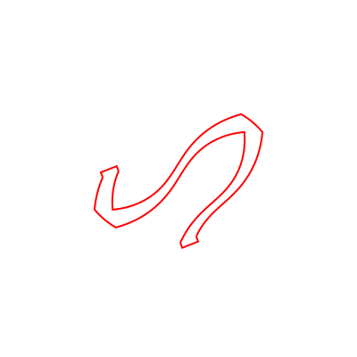
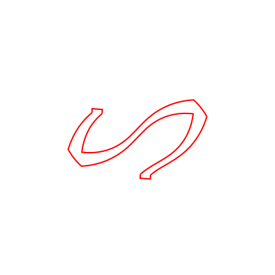
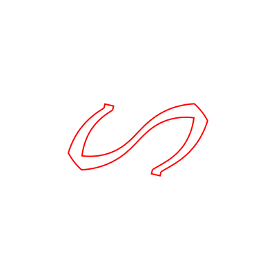

Helicatenoid2


Weaving a transformable curved surface from catenoid to helicoid.
Load packages
using Luxor
using IntervalSets
using BasicBSpline
using BasicBSplineFitting
using StaticArrays
using ElasticSurfaceEmbedding
using LinearAlgebraDefine the shape of the surface
const N = 8
const J = 1
f0(s) = max(-abs(s+1/2N-1)-(1/2N-1), 0)
f1(s) = -1/2+f0(mod(s-J/N, 2))
f2(s) = 1/2-f0(mod(s-1-J/N, 2))f2 (generic function with 1 method)0≤u≤2π, -π/2≤v≤π/2 0≤s≤2, 0≤t≤1
u(s,t) = π*s
v(s,t) = π*(f1(s)*(1-t) + t*f2(s))
catenoid(u,v) = SVector(cos(u)*cosh(v),sin(u)*cosh(v),v)
ElasticSurfaceEmbedding.𝒑₍₀₎(s,t) = catenoid(u(s,t), v(s,t))Compute the shape of the embeddings
splitat = [-1/N, -1/2N, 0, 1/2N, 1/N, 1, 1+1/2N, 1+1/N]
steptree = StepTree()
for shift in [0, -1/N, -2/N, -3/N]
initial_state!(steptree, (0+shift..2+shift, 0..1), splitat)
newton_onestep!(steptree, fixingmethod=:fix5points)
newton_onestep!(steptree, fixingmethod=:fix3points)
newton_onestep!(steptree)
refinement!(steptree, p₊=(0,1), k₊=ElasticSurfaceEmbedding.suggest_knotvector(steptree))
for _ in 1:5 newton_onestep!(steptree) end
pin!(steptree)
endHelper functions to export svg images
function create_bezierpath(C::BSplineManifold{1,(3,),Point})
P = bsplinespaces(C)[1]
k = knotvector(P)
k′ = 3*unique(k) + k[[1,end]]
P′ = BSplineSpace{3}(k′)
C′ = refinement(C,P′)
a′ = controlpoints(C′)
n′ = dim(P′)
m = (n′-1) ÷ 3
bezierpath = BezierPath([BezierPathSegment(a′[3i-2], a′[3i-1], a′[3i], a′[3i+1]) for i in 1:m])
return bezierpath
end
function svector2point(M::BSplineManifold)
P = bsplinespaces(M)
a = controlpoints(M)
a′ = [Point(p[1], -p[2])*100/π for p in a]
M′ = BSplineManifold(a′, P)
return M′
endsvector2point (generic function with 1 method)Settings for export
xlims=(-2,2)
ylims=(-2,2)
unitlength = (100, "mm")
width = (xlims[2] - xlims[1]) * unitlength[1]
height = (ylims[2] - ylims[1]) * unitlength[1]400Export embeddings
mkpath("helicatenoid2")
for i in 1:(N+1)÷2
filepath = joinpath("helicatenoid2", "embedding-$(i).svg")
M = svector2point(steptree.steps[10i].manifold)
D¹ = domain(bsplinespaces(M)[1])
D² = domain(bsplinespaces(M)[2])
u²₋ = minimum(D²)
u²₊ = maximum(D²)
Drawing(width, height, filepath)
origin()
background("white")
sethue("red")
C = M(:,u²₋)
path = create_bezierpath(C)
drawbezierpath(path, :stroke)
C = M(:,u²₊)
path = create_bezierpath(C)
drawbezierpath(path, :stroke)
p1 = controlpoints(M)[begin,begin]
p2 = controlpoints(M)[begin,end]
p3 = controlpoints(M)[end,begin]
p4 = controlpoints(M)[end,end]
v12 = p1-p2
q1 = p1 - Point(v12[2],-v12[1])/norm(v12) * 6
q2 = p2 - Point(v12[2],-v12[1])/norm(v12) * 6
line(p1,q1)
line(q2)
line(p2)
strokepath()
v34 = p3-p4
q3 = p3 + Point(v34[2],-v34[1])/norm(v34) * 6
q4 = p4 + Point(v34[2],-v34[1])/norm(v34) * 6
line(p3,q3)
line(q4)
line(p4)
strokepath()
finish()
preview()
script = read(filepath, String)
lines = split(script, "\n")
lines[2] = replace(lines[2],"pt\""=>"mm\"")
write(filepath, join(lines,"\n"))
endThe output files will be saved as embedding-$(i).svg.
   
This page was generated using DemoCards.jl and Literate.jl.